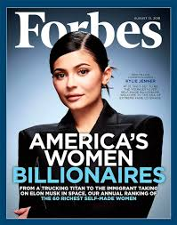
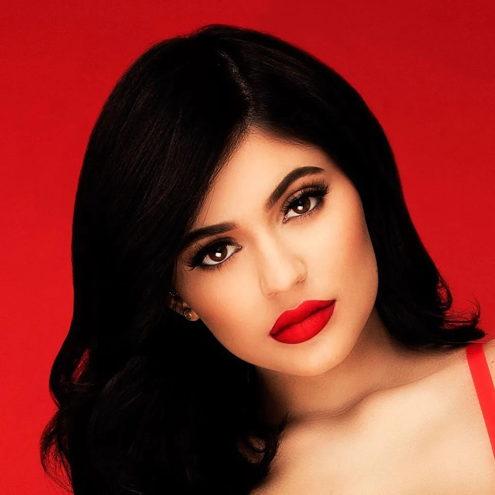
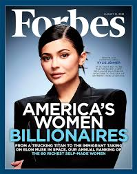
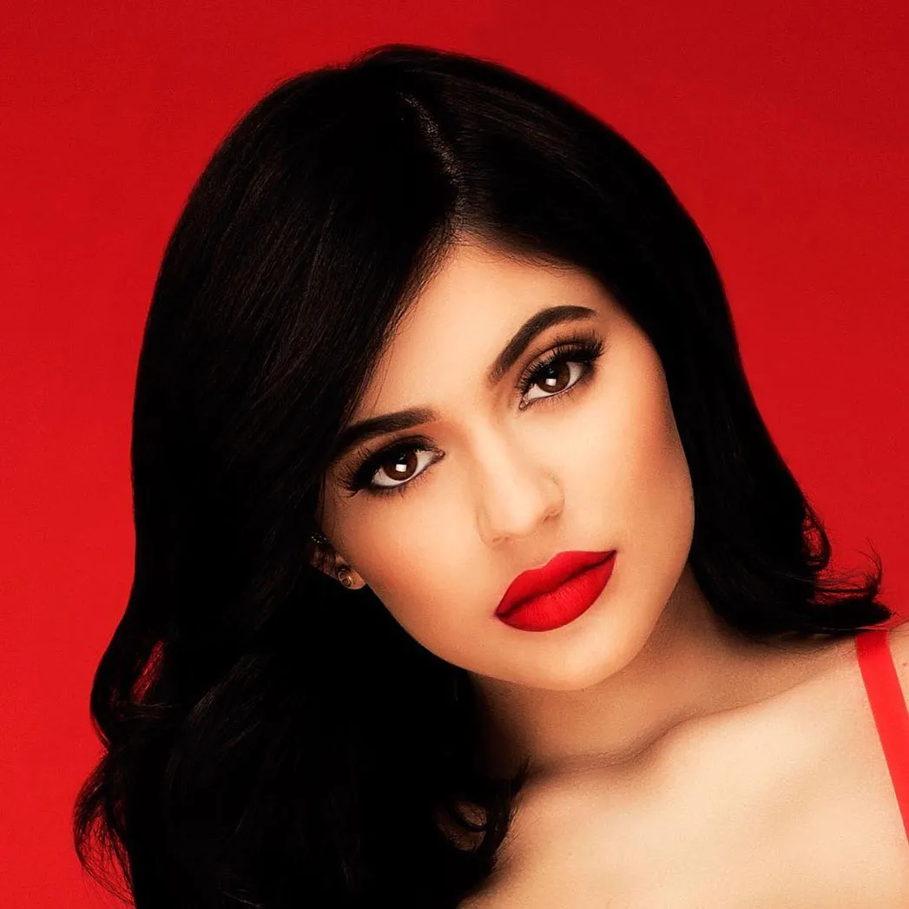
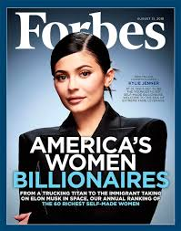
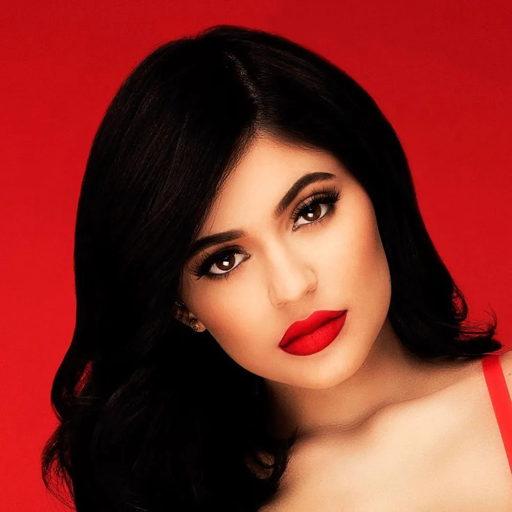

Kylie Jenner, nacida el 10 de agosto de 1997 en Los Ángeles, California, es empresaria, modelo y personalidad de televisión. Fundadora de Kylie Cosmetics, revolucionó la industria del maquillaje con su línea de labiales “Lip Kits”, convirtiéndose en una de las mujeres más influyentes del mundo de la belleza.
En 2007, Kim, la hermana mayor de Kylie, alcanzó la fama nacional, La notoriedad resultante ayudó a Kim y a su familia a conseguir Keeping Up with the Kardashians , un reality show de E! Entertainment Television que seguía la vida diaria de las cuatro hermanas Kardashian: sus padres, Kris y Caitlyn Jenner, y Kylie y su hermana Kendall. Kylie, la menor de las hermanas, tenía 10 años cuando se estrenó el programa. Continuó apareciendo en él hasta su final en 2021 y reapareció con sus hermanas y su madre en The Kardashians , que se estrenó en Hulu en 2022. En 2017 protagonizó su propio spin-off, Life of Kylie , que se emitió durante una temporada.


En 2014, Jenner fue objeto de escrutinio público por negar haberse puesto rellenos labiales —sustancias inyectadas para aumentar el volumen de los labios— a pesar de un cambio notable en su apariencia, afirmando que lo había logrado con maquillaje. Sus labios incluso inspiraron el viral #KylieJennerChallenge, en el que los participantes usaban un pequeño recipiente de vidrio para crear un vacío y así aumentar temporalmente el volumen de sus labios. Sin embargo, en un episodio de 2015 de Keeping Up with the Kardashians , admitió haberse puesto rellenos, diciendo: «Tengo rellenos labiales temporales, es solo una inseguridad mía, y es lo que quería hacer». Ella atribuye su inseguridad con respecto a sus labios a la creación de su exitosa línea de maquillaje, Kylie Cosmetics. El primer producto de la compañía fue un kit de labios que incluía labial líquido y delineador a juego. Cuando los kits salieron a la venta en noviembre de 2015, se agotaron en menos de un minuto. Posteriormente, amplió la marca para incluir otros cosméticos, como productos para ojos e iluminadores. Los productos comenzaron a estar disponibles en las tiendas físicas de la cadena de cosméticos Ulta a finales de 2018. Más tarde, Jenner lanzó Kylie Skin, una línea de cuidado de la piel, y Kylie Baby, una línea de cuidado del cabello y la piel para bebés y niños.